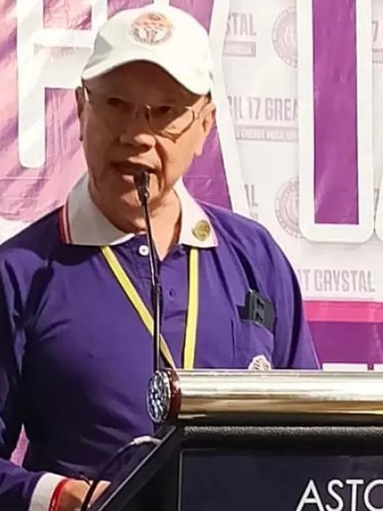

Bapak Agus Sudirman Ketua DPC BanyuwangiCK 17 GREAT CRYSTAL
DPC Banyuwangi
Sasana qigong bio-energi di Kabupaten Banyuwangi. Diresmikan pada Kamis, 19 November 2026. Latihan gratis dan terbuka untuk masyarakat.
Apa itu CK17
CK17 adalah senam bio-energi (Chinese Bio-Energy Medical Chi-Kung). Metode senam ini terdiri atas 17 jurus, dicetuskan oleh Guru Besar asal Taiwan, Prof. Dr. Lee Chen Chou. Anggota berlatih bersama secara rutin di sasana, dipandu instruktur.
Latihan diberikan secara gratis dan terbuka bagi masyarakat, tanpa pungutan biaya.
DPC Banyuwangi
DPC (Dewan Pimpinan Cabang) Great Crystal CK17 Banyuwangi adalah cabang pertama CK17 di kabupaten ini, dan sudah berlegalitas resmi. Peresmian sekaligus menandai pengakuan organisasi ini sebagai cabang olahraga (cabor) di bawah naungan KORMI (Komite Olahraga Masyarakat Indonesia) Banyuwangi, diperkuat dengan Surat Keputusan (SK) dari KORMI.
Peresmian dilaksanakan pada Kamis, 19 November 2026, bertempat di Blambangan Ballroom, Aston Hotel Banyuwangi, oleh Ketua Great Crystal Indonesia CK17 Pusat Surabaya, Bapak David Suwondo.
Peresmian disaksikan oleh PORMI Kabupaten Banyuwangi, dan dihadiri oleh staf ahli Bupati Banyuwangi Bidang Hukum, Pemerintahan dan Pembangunan, Bapak Alief Rachman Kartiono (mewakili Bupati Ipuk Fiestiandani yang berhalangan karena agenda Bunga Desa), Camat Banyuwangi Bapak Andik Basuki, Ketua KORMI Banyuwangi Bapak Ahmad Yani, serta beberapa pejabat pemerintah setempat.
Enam Sasana di bawah DPC Banyuwangi
- Sasana Kedai 45 — Banyuwangi Kota
- Sasana Ketapang
- Sasana MENDUT
- Sasana Baru Indah — Hotel Jajag
- Sasana Alam Cabe — Genteng
- Sasana GENDOH — Rogojampi
Jumlah anggota yang hadir pada peresmian: lebih kurang 500 orang dari keenam sasana tersebut.
Instruktur
Pada peresmian ini, 30 instruktur junior dilantik. Mereka sudah dilatih dan diawasi selama 3 hari oleh Dewan Pembina Pusat Surabaya, Bapak Harijanto.
- Ketua Great Crystal Indonesia CK17 Pusat Surabaya: Bapak David Suwondo
- Dewan Pembina Pusat Surabaya: Bapak Harijanto